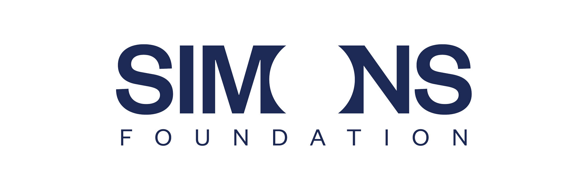
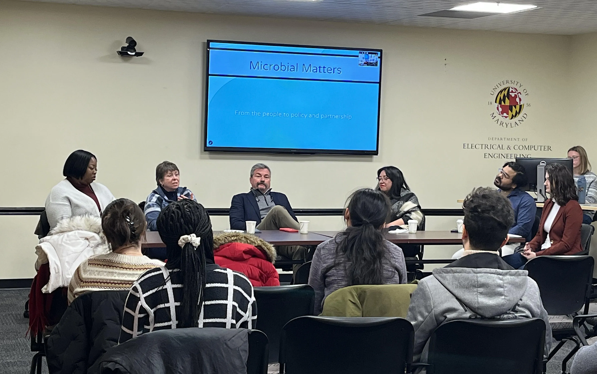
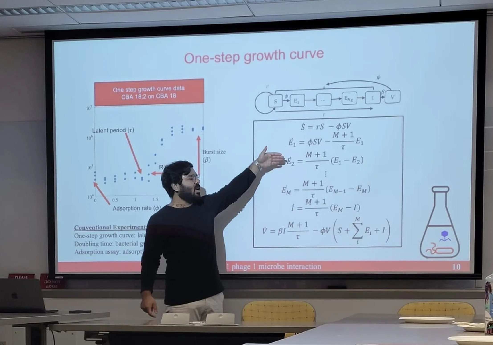
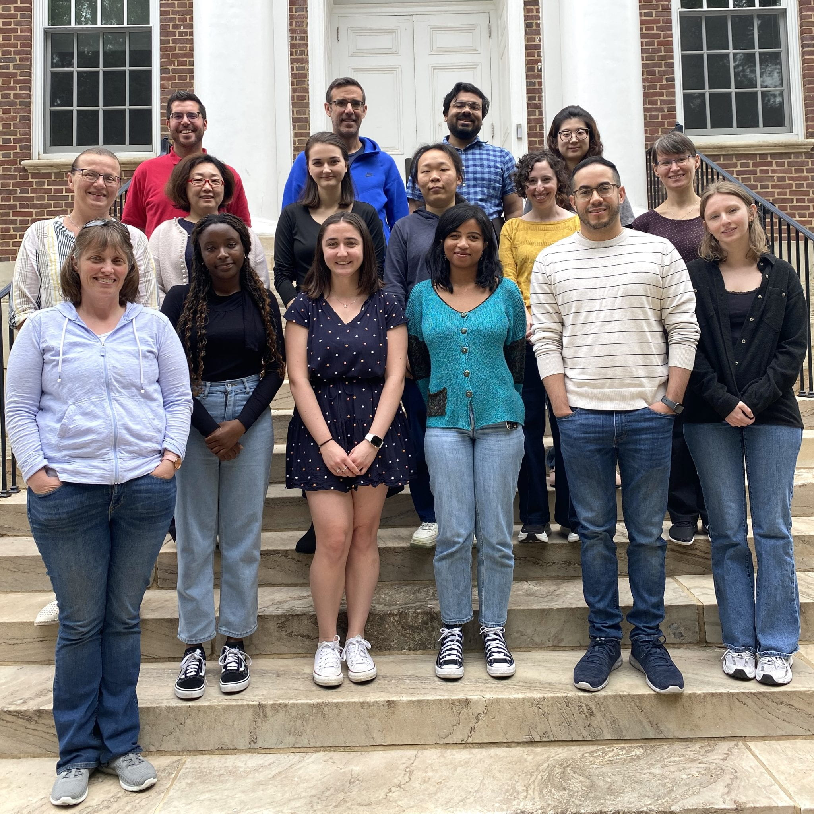

<div class="row flex-column-reverse flex-md-row py-2">

  <div class="col-md-8" id="bio">
    <h1>Raunak Dey</h1>
    <section class="intro-section">
      <p class="text-justify">
        I am a Physics Ph.D. candidate at the
        <a href="https://umdphysics.umd.edu" target="_blank">University of Maryland</a>, College Park,
        advised by <a href="https://biology.umd.edu/people/dr-joshua-weitz" target="_blank">Prof. Joshua Weitz</a>
        and mentored by <a href="https://sjbeckett.github.io" target="_blank">Dr. Stephen Beckett</a>.
        I work at the intersection of <strong>Bayesian machine learning, scientific AI, and inverse problems</strong>
        &mdash; building interpretable models that recover the hidden parameters, dynamics, and interaction
        structure of complex systems from noisy, indirect, time-series data.
      </p>

      <p class="text-justify mission-statement">
        I develop <strong>probabilistic and optimal methods</strong> for inference and decision-making under
        realistic constraints, across computational biology, health AI, and physical systems. I am currently an
        <strong>AI R&amp;D intern at Elanco</strong>, building computer-vision systems for pharmaceutical research,
        and I maintain open-source scientific software (B<sup>2</sup>, InvODE, PHAMILY). My mission is
        <em>building quantitative models for science</em>.
      </p>
    </section>

    

    <!-- Research Highlights Section -->
    <div class="container my-5">
      <div class="row text-center">

        <!-- Tools -->
        <div class="col-md-4 mb-4">
          <div class="cool-card h-100">
            <div class="icon-circle bg-primary text-white mx-auto mb-3">
              <i class="bi bi-gear-fill fs-3"></i>
            </div>
            <h5 class="mb-3 fw-semibold">Mathematical Tools</h5>
            <ul class="styled-list">
              <li><i class="bi bi-check-circle-fill me-2 text-primary"></i>Bayesian Inference &amp; MCMC</li>
              <li><i class="bi bi-check-circle-fill me-2 text-primary"></i>Deep Learning &amp; Generative AI</li>
              <li><i class="bi bi-check-circle-fill me-2 text-primary"></i>Optimization &amp; Optimal Control</li>
              <li><i class="bi bi-check-circle-fill me-2 text-primary"></i>Probabilistic ML &amp; Uncertainty</li>
              <li><i class="bi bi-check-circle-fill me-2 text-primary"></i>Mechanistic ODE &amp; Time-series Models</li>
            </ul>
          </div>
        </div>

        <!-- Domains -->
        <div class="col-md-4 mb-4">
          <div class="cool-card h-100">
            <div class="icon-circle bg-success text-white mx-auto mb-3">
              <i class="bi bi-globe2 fs-3"></i>
            </div>
            <h5 class="mb-3 fw-semibold">Application Domains</h5>
            <ul class="styled-list">
              <li><i class="bi bi-check-circle-fill me-2 text-success"></i>Computational Biology &amp; Health AI</li>
              <li><i class="bi bi-check-circle-fill me-2 text-success"></i>Computer Vision &amp; Behavioral AI</li>
              <li><i class="bi bi-check-circle-fill me-2 text-success"></i>Time-series Forecasting</li>
              <li><i class="bi bi-check-circle-fill me-2 text-success"></i>Phage Therapy &amp; Treatment Modeling</li>
              <li><i class="bi bi-check-circle-fill me-2 text-success"></i>Stochastic Physics &amp; Signal Processing</li>
            </ul>
          </div>
        </div>

        <!-- Impact -->
        <div class="col-md-4 mb-4">
          <div class="cool-card h-100">
            <div class="icon-circle bg-warning text-white mx-auto mb-3">
              <i class="bi bi-briefcase-fill fs-3"></i>
            </div>
            <h5 class="mb-3 fw-semibold">Impact Created</h5>
            <ul class="styled-list">
              <li><i class="bi bi-file-earmark-text-fill me-2 text-warning"></i>8 Journal &amp; Conference Papers</li>
              <li><i class="bi bi-lightbulb-fill me-2 text-warning"></i>1 Patent</li>
              <li><i class="bi bi-hourglass-split me-2 text-warning"></i>3 Manuscripts in Review</li>
              <li><i class="bi bi-star-fill me-2 text-warning"></i>8 Awards</li>
              <li><i class="bi bi-box-seam-fill me-2 text-warning"></i>3 Open-source Tools</li>
              <li><i class="bi bi-people-fill me-2 text-warning"></i>3 Students Mentored</li>
            </ul>
          </div>
        </div>

      </div>
    </div>

    <div class="institution-logos mt-3">
      <p>I am fortunate to have worked alongside excellent scientists and engineers at


      <ul class="list-inline">
        <li class="list-inline-item mx-2">
          
          Elanco Animal Health
        </li>
        <li class="list-inline-item mx-2">
          
          University of Maryland
        </li>
        <li class="list-inline-item mx-2">
          
          Georgia Tech
        </li>
        <li class="list-inline-item mx-2">
          
          Simons Foundation
        </li>
        <li class="list-inline-item mx-2">
          
          University of British Columbia
        </li>
        <li class="list-inline-item mx-2">
          
          IISER Kolkata
        </li>
      </ul>
      </p>
    </div>
  </div>

  <!-- News & Highlights -->
  <section class="news-section my-4" id="news">
    <style>
      #news { border-top: 1px solid #e9ecef; border-bottom: 1px solid #e9ecef; padding: 1.5rem 0 1.25rem; }
      #news .news-title-h { font-size: 1.75rem; font-weight: 700; text-align: left; color: #333; margin: 0 0 1.1rem; }
      #news .news-feed { display: grid; gap: 16px; }
      #news .news-card {
        display: flex; align-items: stretch; background: #fff; border-radius: 14px;
        overflow: hidden; text-decoration: none; color: inherit;
        box-shadow: 0 6px 20px rgba(0,0,0,.06);
        border-left: 5px solid var(--news-accent, #4f70bf);
        transition: transform .25s ease, box-shadow .25s ease;
      }
      #news .news-card:hover { transform: translateY(-4px); box-shadow: 0 14px 30px rgba(0,0,0,.13); }
      #news .news-thumb {
        position: relative; flex: 0 0 132px; width: 132px; min-height: 116px;
        display: flex; align-items: center; justify-content: center; overflow: hidden;
        background: linear-gradient(135deg, var(--news-accent, #4f70bf), rgba(0,0,0,.35));
      }
      #news .news-thumb i { font-size: 2.3rem; color: rgba(255,255,255,.92); z-index: 1; }
      #news .news-thumb img {
        position: absolute; top: 0; left: 0; width: 100%; height: 100%;
        object-fit: cover; z-index: 2; display: block;
      }
      #news .news-body { padding: 14px 18px; display: flex; flex-direction: column; justify-content: center; }
      #news .news-meta { display: flex; align-items: center; flex-wrap: wrap; gap: 9px; margin-bottom: 6px; }
      #news .news-date { font-size: .78rem; font-weight: 700; color: #777; letter-spacing: .02em; }
      #news .news-tag {
        font-size: .68rem; font-weight: 700; text-transform: uppercase; letter-spacing: .05em;
        color: #fff; background: var(--news-accent, #4f70bf); padding: 3px 11px; border-radius: 999px;
      }
      #news .news-title { font-size: 1.05rem; font-weight: 700; line-height: 1.35; color: #1a1a1a; margin: 0 0 4px; transition: color .2s ease; }
      #news .news-card:hover .news-title { color: var(--news-accent, #4f70bf); }
      #news .news-desc { font-size: .9rem; line-height: 1.45; color: #666; margin: 0; }
      @media (max-width: 600px) {
        #news .news-card { flex-direction: column; }
        #news .news-thumb { flex-basis: 150px; width: 100%; }
      }
    </style>

    <h2 class="news-title-h">News &amp; Highlights</h2>
    <div class="news-feed">

      <a class="news-card" style="--news-accent:#0072CE;" target="_blank" rel="noopener"
         href="https://www.linkedin.com/posts/raunak-d-50991214a_elanco-artificialintelligence-computervision-share-7463301353654722560-Bvo2/">
        <div class="news-thumb">
          <i class="bi bi-camera-video-fill"></i>
          
        </div>
        <div class="news-body">
          <div class="news-meta"><span class="news-date">May 2026</span><span class="news-tag">Industry</span></div>
          <p class="news-title">Started as AI R&amp;D Intern at Elanco Animal Health</p>
          <p class="news-desc">Building computer-vision systems for pharmaceutical research &mdash; foundation models, Bayesian priors, and large-scale video pipelines.</p>
        </div>
      </a>

      <a class="news-card" style="--news-accent:#2a9d8f;" target="_blank" rel="noopener"
         href="https://academic.oup.com/ismej/article/20/1/wrag041/8526250">
        <div class="news-thumb">
          <i class="bi bi-journal-text"></i>
          
        </div>
        <div class="news-body">
          <div class="news-meta"><span class="news-date">March 2026</span><span class="news-tag">Publication</span></div>
          <p class="news-title">First-author paper published in <em>The ISME Journal</em></p>
          <p class="news-desc">&ldquo;Emergent higher-order interactions enable coexistence in phage&ndash;bacteria community dynamics.&rdquo;</p>
        </div>
      </a>

      <a class="news-card" style="--news-accent:#6a4c93;" target="_blank" rel="noopener"
         href="https://www.umiacs.umd.edu/news-events/news/umd-microbiome-fellows-cap-seven-month-program-public-health-panel">
        <div class="news-thumb">
          <i class="bi bi-mic-fill"></i>
          
        </div>
        <div class="news-body">
          <div class="news-meta"><span class="news-date">Dec 2025</span><span class="news-tag">Leadership</span></div>
          <p class="news-title">Coordinated the &ldquo;Microbial Matters&rdquo; public-health panel</p>
          <p class="news-desc">Capstone panel for the UMD Microbiome Fellows program, translating microbiome science to public health.</p>
        </div>
      </a>

      <a class="news-card" style="--news-accent:#f09228;" target="_blank" rel="noopener"
         href="https://cmns.umd.edu/news-events/news/raunak-dey-makes-physics-and-math-go-viral">
        <div class="news-thumb">
          <i class="bi bi-megaphone-fill"></i>
          
        </div>
        <div class="news-body">
          <div class="news-meta"><span class="news-date">Oct 2025</span><span class="news-tag">Press</span></div>
          <p class="news-title">Featured by UMD: &ldquo;When Physics and Math Go Viral&rdquo;</p>
          <p class="news-desc">UMD CMNS profile of my research bridging physics, math, and biology.</p>
        </div>
      </a>

      <a class="news-card" style="--news-accent:#e53c50;" target="_blank" rel="noopener"
         href="https://microbiome.umd.edu/2025/06/20/fellowship-program-builds-bridges-in-microbiome-sciences/">
        <div class="news-thumb">
          <i class="bi bi-award-fill"></i>
          
        </div>
        <div class="news-body">
          <div class="news-meta"><span class="news-date">June 2025</span><span class="news-tag">Award</span></div>
          <p class="news-title">Awarded the UMD Microbiome Research Fellowship</p>
          <p class="news-desc">Selected for the interdisciplinary fellowship building bridges across the microbiome sciences.</p>
        </div>
      </a>

    </div>
  </section>
  
  <!-- RIGHT COLUMN -->
  <div class="col-md-4" style="z-index:4;">
    
    <p id="description"> Mission: Building quantitative models for science </p>

    <!-- ✅ Social Links moved here -->
    <div class="profile-social text-center mt-3">
      <ul class="social-links list-inline mb-0">
        <li class="list-inline-item">
          <a href="https://mailhide.io/e/uNztNKai" target="_blank" class="social-link">
            <i class="bi bi-envelope-fill"></i> <span>rdey [at] umd.edu</span>
          </a>
        </li>
        <li class="list-inline-item">
          <a href="https://github.com/RaunakDey" target="_blank" class="social-link">
            <i class="bi bi-github"></i> <span>GitHub</span>
          </a>
        </li>
        <li class="list-inline-item">
          <a href="https://scholar.google.com/citations?user=2mI3Lx4AAAAJ&hl=en&authuser=1" target="_blank" class="social-link">
            <i class="bi bi-mortarboard-fill"></i> <span>Google Scholar</span>
          </a>
        </li>
        <li class="list-inline-item">
          <a href="https://www.linkedin.com/in/raunak-d-50991214a/" target="_blank" class="social-link">
            <i class="bi bi-linkedin"></i> <span>LinkedIn</span>
          </a>
        </li>
        <li class="list-inline-item">
          <a href="https://twitter.com/raunak_dey_" target="_blank" class="social-link">
            <i class="bi bi-twitter"></i> <span>X</span>
          </a>
        </li>
      </ul>
    </div>

    <!-- Small scoped tweak (doesn't override your CSS globally) -->
    <style>
      .profile-social {
        text-align: center;
      }
      .profile-social .social-links {
        padding-top: 8px;
      }
      .profile-social .social-link i {
        font-size: 1.1rem;
      }
      .profile-social span {
        font-size: 0.9rem;
        vertical-align: middle;
      }
    </style>
  </div>
</div>

{% include research.html %}
{% include publications.html %}
{% include software.html %}
{% include experience.html %}
{% include awards.html %}
{% include talks.html %}
{% include teaching.html %}
{% include media.html %}